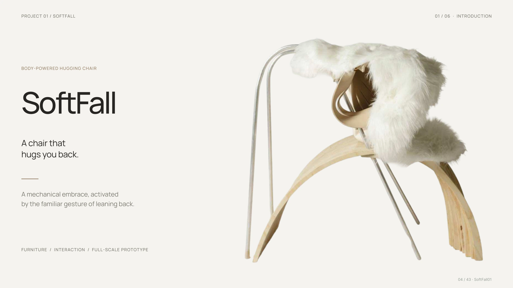
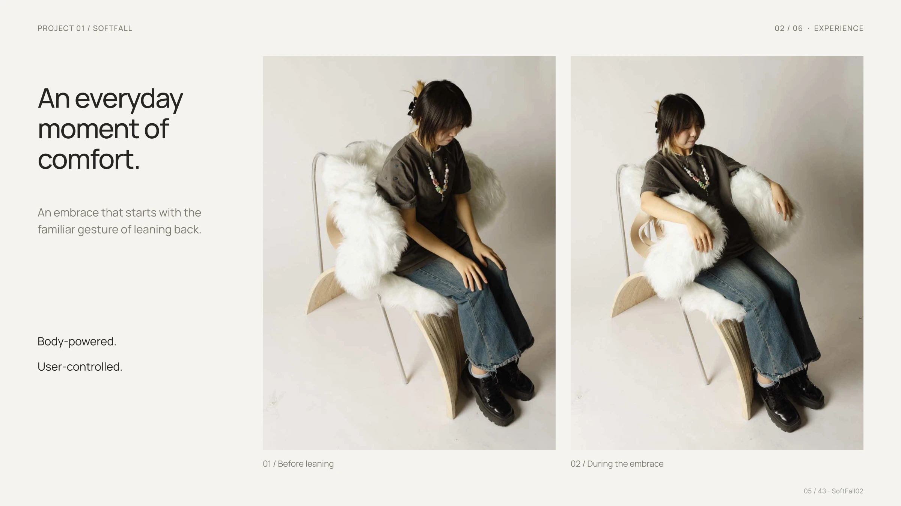
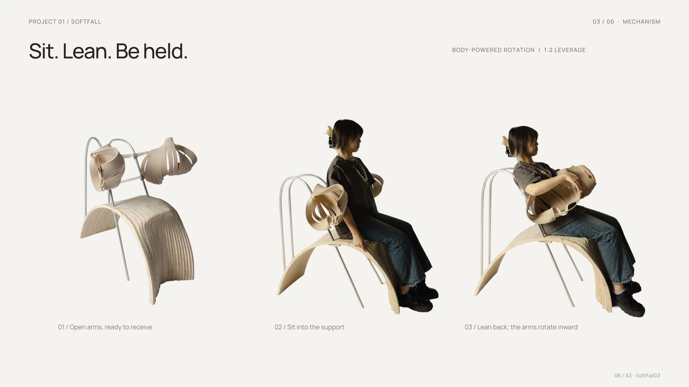
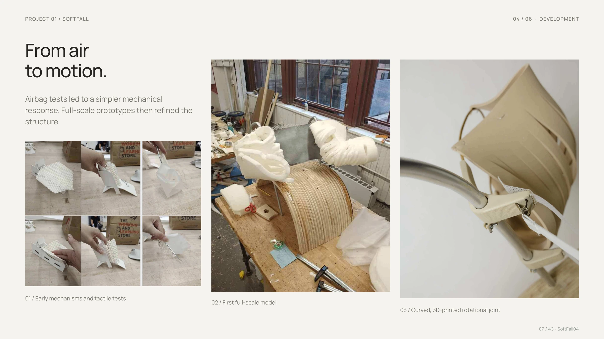
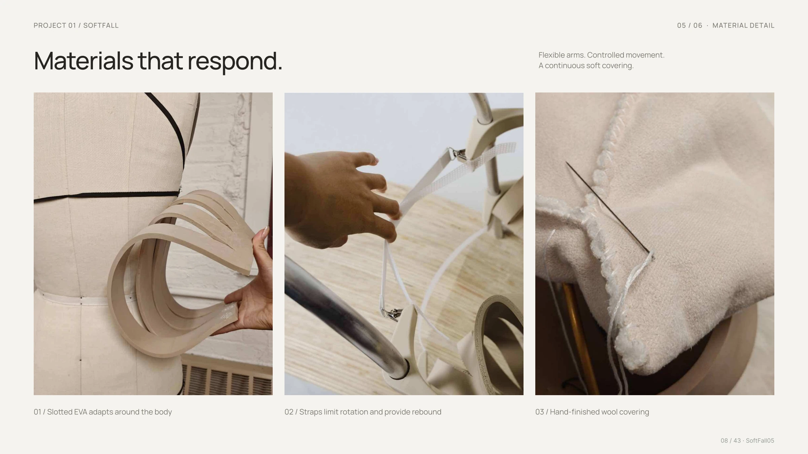
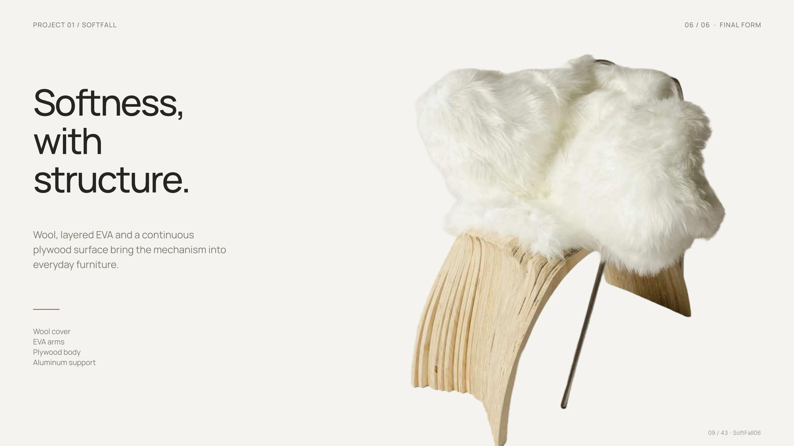

All work
SoftFall
SoftFall explores comfort through a body-powered mechanism. Leaning back activates a mechanical embrace, bringing together a continuous plywood surface, layered EVA arms, and a soft wool cover in a full-scale prototype.
View full process




